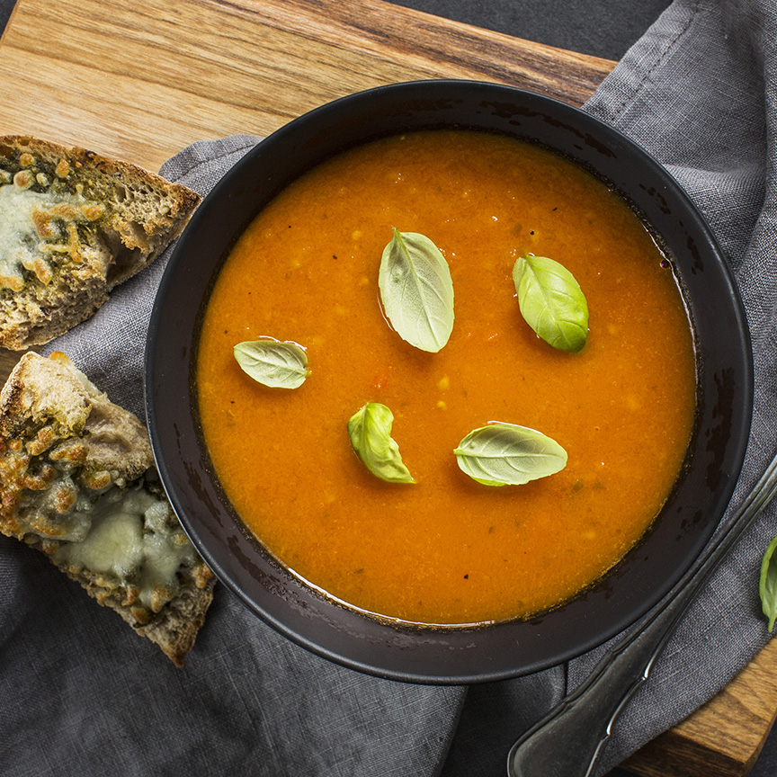

Tomatensoep met pesto broodjes
De tomatensoep met pesto broodjes is lekker als voorgerecht maar kan ook als tussendoortje met verschillende hapjes op tafel.
Ingrediënten
1 ui
750 gram tomaten
750 ml water
1 bouillonblokje
1 wortel
1 klein blikje tomatenpuree
één handje verse basilicumblaadjes
1 stokbrood
1 potje pesto
50 gram geraspte mozzarella kaas
Bereidingswijze
- Warm de oven voor op 230 graden Celsius.
- Snijd het stokbrood in stuken en besmeer met een beetje pesto of bestrooi met een beetje mozzarella.
- Zet een soeppan op het vuur en fruit de uit ongeveer 3 minuten in de olijfolie.
- Voeg de wortel in kleine blokjes toe en tomaten in parten en bak deze 5 minuten mee.
- Voeg het water en het bouillonblokje toe en roer de tomatenpuree er door. Voeg ook de verse basilicum toe. Laat het 10 minuten pruttelen.
- Pureer nu alles met een staafmixer fijn en laat een paar minuutjes doorkoken. Breng eventueel nog op smaak met wat peper en zout.
- Grill ondertussen de broodjes 3 á 4 minuten onder de grill tot ze een mooi kleurtje hebben.
- Serveer de tomaten basilicum soep met de pestobroodjes.
